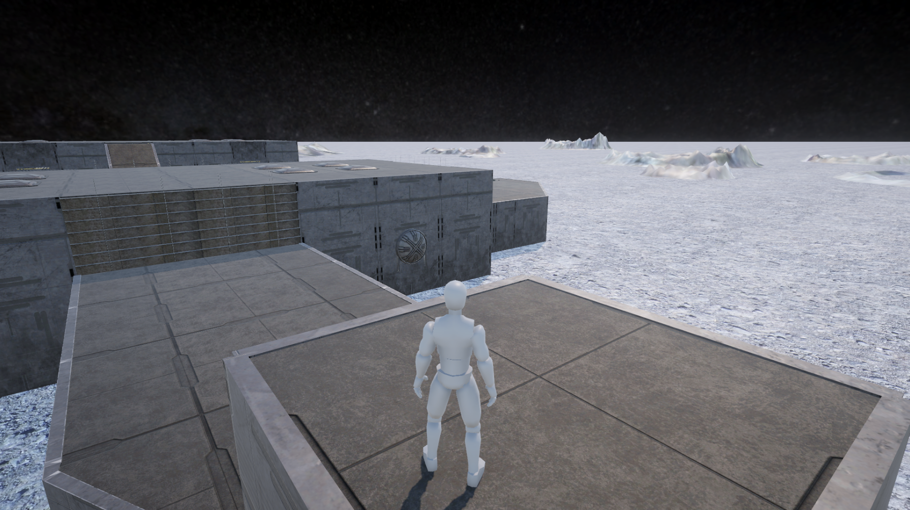
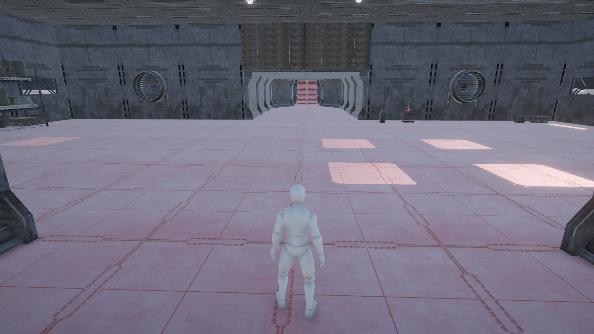
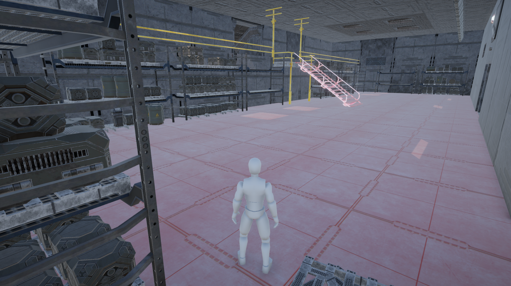
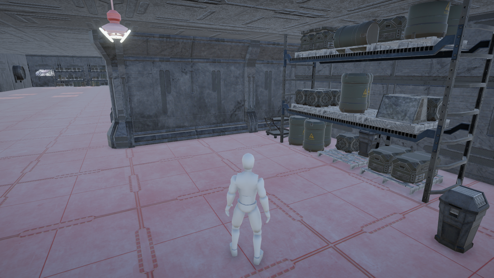
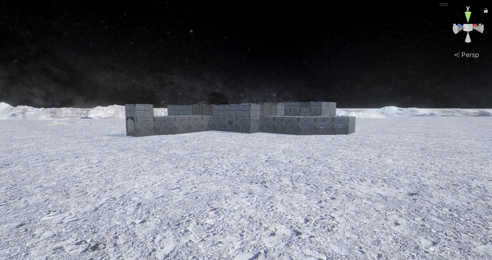
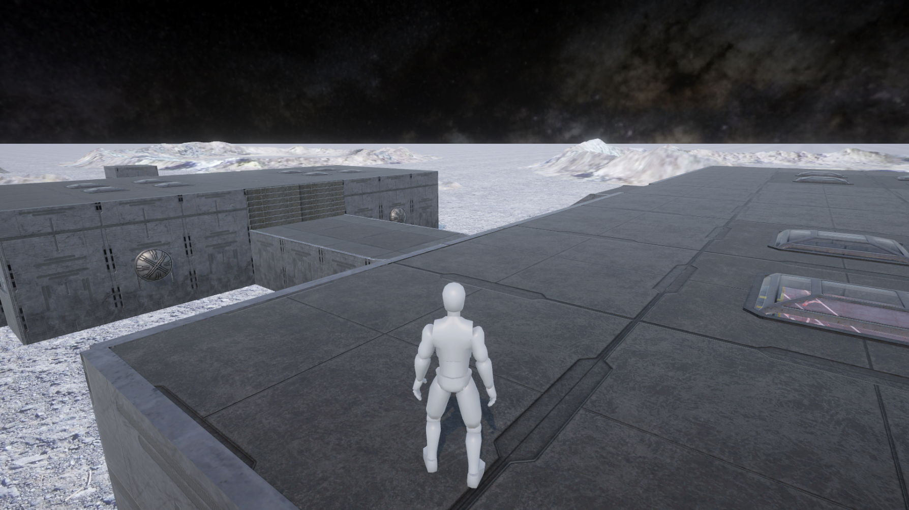
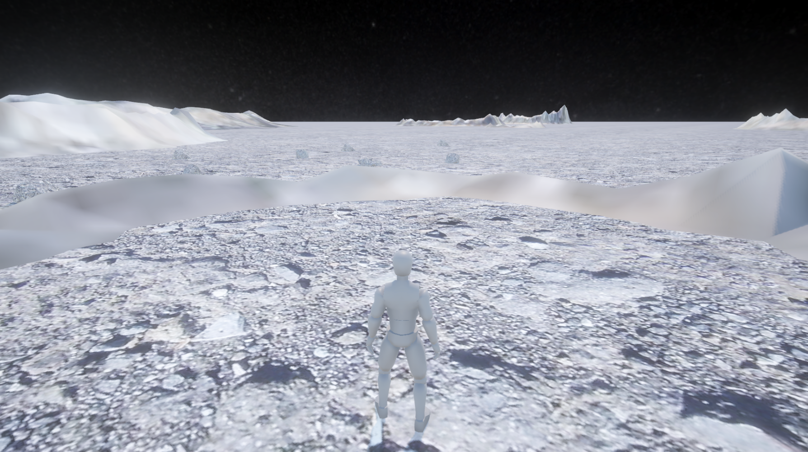
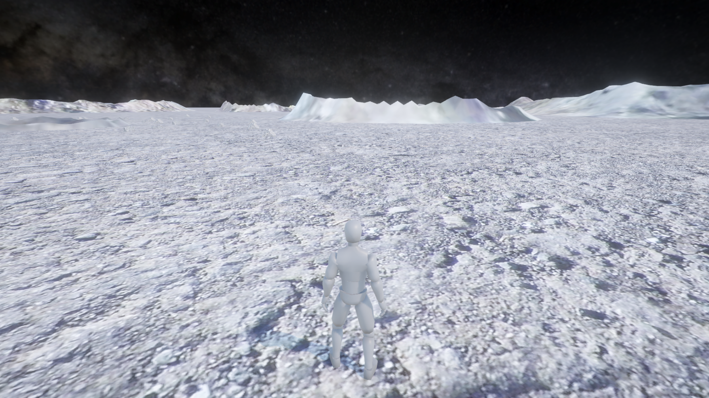
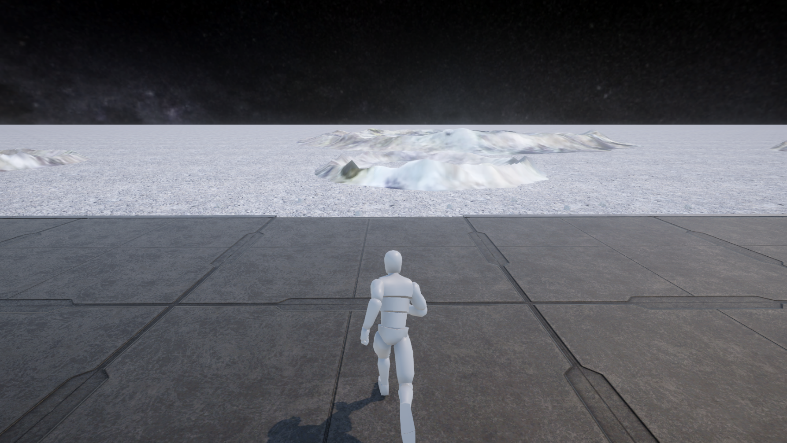
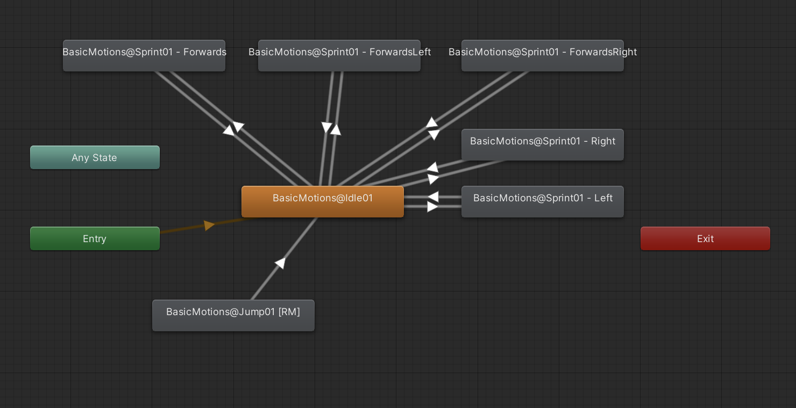

Interactive 3D
A small world, built from the ground up.
A Unity environment with custom terrain, animation and third-person exploration.

The context
A problem worth solving.
Create an explorable environment that combines world-building with responsive character control.
My contribution
What I brought to the work.
Designed a moon-base environment with custom terrain, skybox and animations, including a third-person controller. Original imagery and the animation-state diagram are retained.
The product
What it makes possible.
Original project / selected screens & walkthrough
The original project imagery and product explanation are retained here. These are historical project materials; current availability may differ.








The following state diagram is used to control which animations are played for the 3rd person controller:

Where it stands
The work keeps moving.
This project remains part of the earlier-work collection. The original materials show the implementation at that point in time; they are not a claim about current operation.